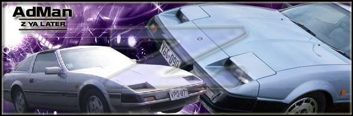

-
Well, since i got the car it felt a bit under powered, even at 9psi our SAAB 95 would pull on it.
Gas mileage has been horrible.. with a complete fill up the car got about 160 miles to the tank with city/highway driving.
This morning I decided to take the car to work since it's only 1 mile away.
I finally pull up and i feel a drop in pwer and barely pushing the gas pedal the car bucks and lunges forward slightly. When i gave it more gas it was smoother.
Now getting out of work i start the car, idles high fine (cold out). idle comes down to about 1500 rpms and i start to notice a weird miss through the exhaust. I take off and head down the street. drove it half a mile and i feel a loss in power (vaccum/boost gauge at "0" to get it going normally). I noticed I had to give it a little more gas then i am used to.
I get to my street and the car starts to lose power and slowly starts to buck and sputter, it happened to the point where i was going 10mph with the gas pedal to the metal!
when i downshifted I took notice that my lights inside came on… damn
I waited a few seconds and i turn the key…ok i hear the fuel pump good. When i cranked it it started but idled low, about 3-500rpms. when i gave it gas idle dropped lower and stalled.
I started it a few times and got the thing home.
Now this is whats on the car:
New tune up, Cap, rotor, plugs, fuel filter, pcv, (it has a K&N)
Timing belt was done 20k ago, they replaced everything associated.
Before this the timing was dead on.
I had checked the ECU when i was getting bad gas mileage and I only got codes for FPR temp sensor and CHTS (which was replaced during timing belt replacement)
wow, a CHTS cause this issue… it runs but not stay running.Gone - 1988 Shiro
2004 BMW 330Ci
2005 BMW 330i
1991 Twin Turbo Z's (Red and Black)
http://www.E46Turbo330Ci.com -
Disconnect the mafs , and see what happens.imagination is a virtue -
Wow, i hope you find the solution for this or somthin b/c this is the problem im having. Mines a little worse but basically the same thing.89' Turbo-R.I.P. (scrapped)
87' NA all parts swapped from 89', Stance, 3.3 long block, hx35w, Injector Dynamics 1000cc, isky cams, pathfinder intake, front mount, megasquirt v3.57 w/MS3X
07 Frontier XE <----(turd) daily -
Ok, went outside, I waited for the car to cool off completely. sounds definitely like the CHTS went to poop. car ran excellent until warmed up then the samething.
So basically the dreaded hard/rough warmed up idle and running condition i experienced in my '85 back in '95.Gone - 1988 Shiro
2004 BMW 330Ci
2005 BMW 330i
1991 Twin Turbo Z's (Red and Black)
http://www.E46Turbo330Ci.com -
Did you replace the chts harness? Always check the chts with an ohm meter after the harness. Don't rely on just the computer to tell you if it is good. Replace the harness/chts (used nissan parts, right?) and set timing once the car is warmed up.Chuck Stong
300+ Parts and Performance owner
http://www.300-plus.com
2002 ZCOT president and always active member -
I did not replace the harness but in the documentation i got from the previous owner it states cylinder head temp sensor with associated harness on the receipt. I can't support a claim if it is nissan or not.Firehawk wrote: Did you replace the chts harness? Always check the chts with an ohm meter after the harness. Don't rely on just the computer to tell you if it is good. Replace the harness/chts (used nissan parts, right?) and set timing once the car is warmed up.
Howerver I am going to replace it.
Now the sensor going bad, would that cause the huge decrease in power and gas mileage? never experienced this issue to the extreme on my '85.Gone - 1988 Shiro
2004 BMW 330Ci
2005 BMW 330i
1991 Twin Turbo Z's (Red and Black)
http://www.E46Turbo330Ci.com -
Once you get it ideling and running reasonably well then I would say it will be time to figure out the low mpg / rich running issue. Could be related but hard to say at this point.
Quick question. When you start it do you have to hit the throttle at all normally? If not then try starting it and letting it idle until it gets to normal running temps without touching the throttle peddle. Once there if it has run fine to this point at idle and starts acting up you may want to look at the TPS. CHTS, MAF and TPS can be a bit hard to differentiate at times. Been there, done all 3 chasing a problem.
btw- K&N and too much oil on it can foul the MAF, but you probably already considered that. May not be the current issue but if it is fouled it dang sure wont help.Just stand back and throw money.
Performance costs money.
Reliable performance costs more. -
I agree. Get the idle issue fixed, then move on to the next problem.Chuck Stong
300+ Parts and Performance owner
http://www.300-plus.com
2002 ZCOT president and always active member -
have you checked out you AFM?
i had the connecting rubber couplers come loose after the AFM and the car ran exactly the same way yours does. although i fixed it as soon as it did it.
anyway check that out and report back. -
The car always idled nicely at 690-700 rpms perfectly all the time!OR-Zman wrote: Once you get it ideling and running reasonably well then I would say it will be time to figure out the low mpg / rich running issue. Could be related but hard to say at this point.
Quick question. When you start it do you have to hit the throttle at all normally? If not then try starting it and letting it idle until it gets to normal running temps without touching the throttle peddle. Once there if it has run fine to this point at idle and starts acting up you may want to look at the TPS. CHTS, MAF and TPS can be a bit hard to differentiate at times. Been there, done all 3 chasing a problem.
btw- K&N and too much oil on it can foul the MAF, but you probably already considered that. May not be the current issue but if it is fouled it dang sure wont help
When I started the car since I owned it I never have to hit the gas pedal at all.
The car acts up once it warms up… once warm it start to idle low/surge then lopes and dies. starts up every time but then dies. leading me to believe that the ecu is correct this time (code 13). Tomorrow I am going to test resistance.
The K&N is just about new and not an ounce of crud as the car is barely driven anywhere and was well kept up.
Gone - 1988 Shiro
2004 BMW 330Ci
2005 BMW 330i
1991 Twin Turbo Z's (Red and Black)
http://www.E46Turbo330Ci.com -
with the amount of driving the car gets i doubt the couplers fell off, I tightened all clamps on the intake tract… but who knows I will check :wink:84z31 wrote: have you checked out you AFM?
i had the connecting rubber couplers come loose after the AFM and the car ran exactly the same way yours does. although i fixed it as soon as it did it.
anyway check that out and report back.Gone - 1988 Shiro
2004 BMW 330Ci
2005 BMW 330i
1991 Twin Turbo Z's (Red and Black)
http://www.E46Turbo330Ci.com -
The very first night I took my 85' into Adelaide some while ago now, I had a problem with the idle… driving down the road no problems, waiting at traffic lights, low idle… very low idle, as I went to take off it would stall… start her back up instantly & drive off again, eventually it fixed itself… not entirely sure how it all went about but yeah, hasnt done it since.
Only thing I had trouble with at the moment with it is the ECU, I wanna do the codes but I cant seem to find where the little screw is to change the setting, that & I cant exactly get in there too well to see it. -_-
1985' 2+2 Z31 Non Turbo…
1986' 2+2 Z31 Turbo… -
I replaced the CHTS and sun-harness with new untis and also the FPR.
the car runs pretty decent now.Gone - 1988 Shiro
2004 BMW 330Ci
2005 BMW 330i
1991 Twin Turbo Z's (Red and Black)
http://www.E46Turbo330Ci.com -
well, I think i found one of my low power, bad idle, bad gas mileage issues.
got out this morning to crank the car over and it just turned and turned. I heard the pump work and smelled fuel so i am like damn, no spark. I checked it after work and bam! checked the plug wires for no spark with a plug.. no spark at all.
checked the ecu codes and got a 11. my distributor has been making loud noises lately.Gone - 1988 Shiro
2004 BMW 330Ci
2005 BMW 330i
1991 Twin Turbo Z's (Red and Black)
http://www.E46Turbo330Ci.com -
got my distributor in today. Got my Nistune yesterday. lets see what happens from here.Gone - 1988 Shiro
2004 BMW 330Ci
2005 BMW 330i
1991 Twin Turbo Z's (Red and Black)
http://www.E46Turbo330Ci.com

Copyright © 2006–. All rights reserved. Privacy Policy